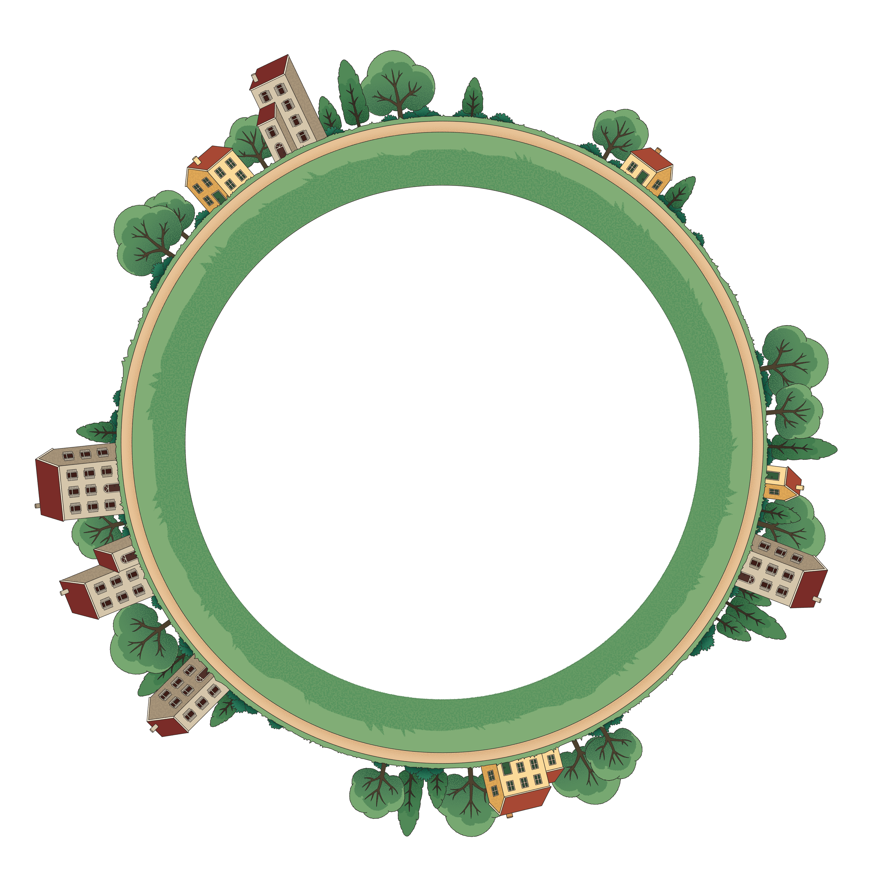
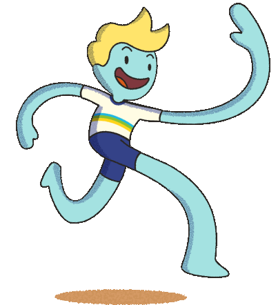
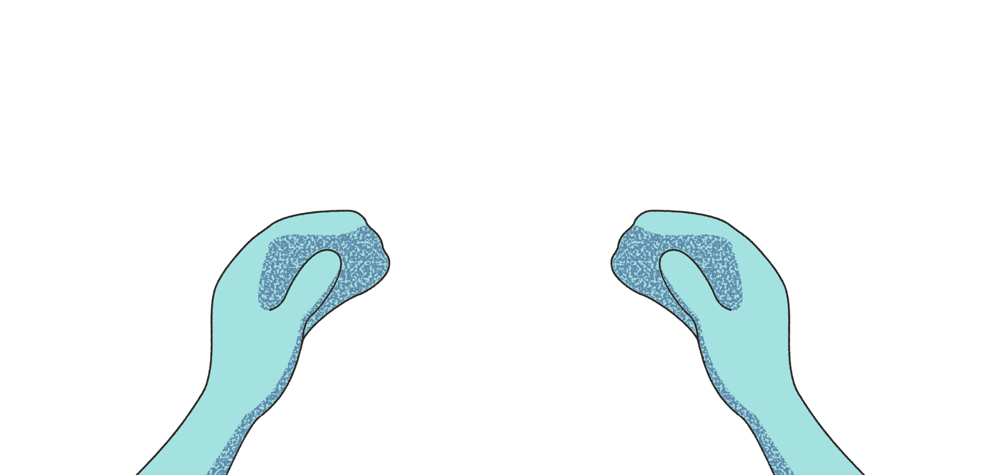
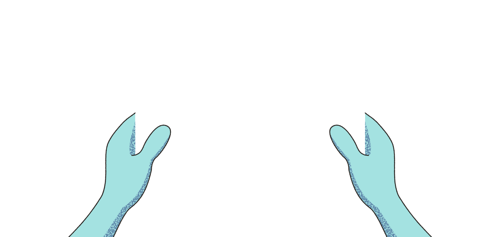

Sabias que…
Carregar…


A carregar a aventura…
0%
Carregar…


0%


Em cada módulo, vais explorar um tema e descobrir como este está relacionado com a tua saúde. Vais aprender a ser mais saudável, através de desafios e atividades interativas. Escolhe um módulo e começa já a explorar!
O metabolismo é um tema mais complexo do que parece.
Descobre como a alimentação, o exercício físico, o sono e outros aspetos da vida se relacionam, e por que razão é tão importante estar atento aos diferentes fatores que influenciam a taxa metabólica.
O que vais aprender
Há muitos fatores que influenciam as nossas escolhas alimentares.
A alimentação faz parte da nossa rotina, mas nem sempre escolhemos o que comemos com base no que sabemos ou no que gostamos. Vais explorar diferentes situações do quotidiano e compreender como o contexto em que vivemos pode influenciar as nossas escolhas.
O que vais aprender
A prática de atividade física é igualmente importante para cuidar da tua saúde.
Neste módulo, vais compreender as vantagens de um estilo de vida mais ativo e descobrir diferentes formas de reduzir o tempo que passas parado no teu dia a dia.
Através de atividades interativas, vais perceber que a atividade física pode fazer parte de vários momentos da tua rotina.
O que vais aprender
A saúde também depende da forma como nos sentimos.
O nosso bem-estar não depende apenas da saúde física. Vais explorar situações do quotidiano e perceber como o bem-estar pode ser influenciado por diferentes experiências e contextos, refletindo sobre a importância de cuidar do bem-estar físico e mental.
O que vais aprender